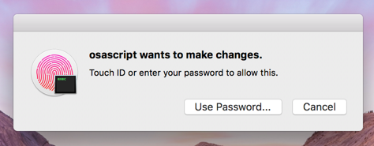

Tutorial¶
Note
RktMachine needs macOS Yosemite or later to run. This is because Yosemite was the first version of macOS with the native Hypervisor Framework for running VMs.
Installing RktMachine¶
Begin by downloading the latest version of RktMachine from the RktMachine releases page on GitHub.
RktMachine sometimes needs to use superuser permissions during operation and contains other privilege escalation points. For this reason, it is important to verify that the RktMachine download corresponds with the SHA256 checksum provided on the RktMachine releases page.
shasum -a 256 /path/to/downloaded/RktMachine.dmg
When you are happy that you have an authentic RktMachine.dmg, go ahead
and open it.
It is also insecure to run applications directly from a disk archive so copy
RktMachine to your Applications folder using the provided shortcut.
Starting the RktMachine CoreOS VM¶
Open RktMachine from your Applications folder. On start, RktMachine will
notify you that it will ask for your user password. This is needed to start the
Corectl daemon service as the superuser.
The password dialogue may look like the following if you have Touch ID available.
Or like the following for password entry.

Corectl, which stands for CoreOS Control, is the service used by RktMachine to create and manage a VM on the macOS hypervisor. Corectl installs CoreOS Linux on the VM, a distribution usually deployed on cloud infrastructure. This distribution is also well suited for running rkt containers and managing network bridging for the RktMachine environment.
After the application has started, a new menu bar icon will appear in the shape of a dog silhouette. This is the RktMachine control menu where VMs may be started and stopped. There are also options for connecting to a running VM using SSH, for resetting the current VM to a completely clean state, and for checking for updates to the RktMachine app.
RktMachine will automatically start a VM when it is opened. This will cause a terminal window to open showing progress.
If this is the first time RktMachine is run then it will first download the latest CoreOS image.
______ __ __ _______ __ __
| __ | |--| |_| | .---.-.----| |--|__.-----.-----.
| | <| _| | _ | __| | | | -__|
|___|__|__|__|____|__|_|__|___._|____|__|__|__|__|__|_____|
Woof Woof, Inc.
> booting rktmachine (1/1)
---> downloading and verifying stable/1298.7.0
2.12 MB / 33.47 MB [==>------------------------------------] 6.35 % 47s
First the Linux kernel coreos_production_pxe.vmlinuz is downloaded and
verified to be authentic. Then the main CoreOS stable image is downloaded.
---> SHA512 hash for coreos_production_pxe.vmlinuz OK
54.09 MB / 235.47 MB [=========>---------------------------] 22.97 % 4m27s
Once this is complete the image is verified and the version is logged.
---> SHA512 hash for coreos_production_pxe_image.cpio.gz OK
---> stable/1298.7.0 ready
It is only necessary to download the CoreOS images once. RktMachine will usually start from this point and boot the last previously loaded VM instead.
RktMachine boots the CoreOS VM.
---> 'rktmachine' started successfuly with address 192.168.64.19 and PID 17660
---> 'rktmachine' boot logs can be found at '/Users/docrualaoich/.coreos/running/C16CF576-FB07-4DC9-8BF6-C022445B31A8/log'
---> 'rktmachine' console can be found at '/Users/docrualaoich/.coreos/running/C16CF576-FB07-4DC9-8BF6-C022445B31A8/tty'
Finally our VM is ready to be used.
Building a rkt Container¶
Select the SSH option from the RktMachine menu bar app. This will open a new terminal window and connect to the RktMachine CoreOS VM.
______ __ __ _______ __ __
| __ | |--| |_| | .---.-.----| |--|__.-----.-----.
| | <| _| | _ | __| | | | -__|
|___|__|__|__|____|__|_|__|___._|____|__|__|__|__|__|_____|
Woof Woof, Inc.
Last login: Sat Apr 22 22:59:34 UTC 2017 on ttyS0
Container Linux by CoreOS stable (1298.7.0)
Update Strategy: No Reboots
core@rktmachine ~ $
Your user home directory is mounted from your macOS to the CoreOS VM using NFS
and available with the same /Users/<username> directory path as on your
macOS. This is convenient for exchanging files between the CoreOS VM and the
host macOS.
(The NFS may take a couple of moments to appear after startup so don’t panic if it is not there immediately.)
Tip
For convenience add symbolic links in the home directory on the CoreOS VM
pointing useful directories on the /Users mount.
For this tutorial, we will use the example of creating a container to run a Jupyter server. This is the notebooking system which was previously called iPython Notebook before being extended to other backends.
The buildah command line tool is one of the tools which can used to build containers for rkt. It comes preinstalled by RktMachine on the CoreOS VM.
Start the container from scratch.
(Note that superuser privileges are needed to run buildah commands.)
sudo buildah from scratch --name jupyter
We can verify that buildah has added the container by running:
$ sudo buildah containers
CONTAINER ID BUILDER IMAGE ID IMAGE NAME CONTAINER NAME
11596f165083 * scratch jupyter
Note that there is no image yet, we have just created an ad hoc container so
far. This means that the output from buildah images won’t include this new
container.
This is an empty container and does not include any content yet. To add a useful filesystem, first download a base image provided by Ubuntu.
wget http://cdimage.ubuntu.com/ubuntu-base/releases/18.04/release/ubuntu-base-18.04-base-amd64.tar.gz
To get this onto the container, we mount the container using buildah mount:
$ sudo buildah mount jupyter
/var/lib/containers/storage/devicemapper/mnt/088dc2059ad551206611cc519f1ea11428862f7f4f5842b9049edc785d91a646/rootfs
The output is the mount location on the host. Verify that the container is empty by checking the mount has no content:
$ sudo ls /var/lib/containers/storage/devicemapper/mnt/088dc2059ad551206611cc519f1ea11428862f7f4f5842b9049edc785d91a646/rootfs
To add the content, untar the Ubuntu base image to this location. The untar has to be done as root for permission to write to the mount location.
$ sudo tar xzf ubuntu-base-18.04-base-amd64.tar.gz \
-C /var/lib/containers/storage/devicemapper/mnt/088dc2059ad551206611cc519f1ea11428862f7f4f5842b9049edc785d91a646/rootfs
And verify that the container can now usefully run bash:
sudo buildah run jupyter bash
Then umount the container filesystem since we will execute commands on the container instead from now.
sudo buildah umount jupyter
This creates the basic layout of the container. The buildah command has a number
of subcommands which can be used to add and perform operations on the base
image. A full list of which can be seen by running buildah --help.
We will be mainly interested in the buildah run subcommand. This loads the
container in its current state and performs a command from within the
container. We will use this to run apt and other installation instructions on
the container itself.
Start by updating the Ubuntu base installation and adding some required utilities, wget and bzip2. These are needed for later steps in the installation.
sudo buildah run jupyter -- apt-get update -qq
sudo buildah run jupyter -- apt-get upgrade -qq
sudo buildah run jupyter -- apt-get install -qq wget bzip2
Next, we perform the Jupyter installation steps. Since we are interested mainly in the parts of this to do with creating containers, we’ll skip through the actual Jupyter installation quickly.
(For anyone interested, Jupyter is installed by first installing the miniconda minimal distribution of Anaconda, a Python data science platform and then using the package manager for that to install the rest of the parts.)
sudo buildah run jupyter -- wget https://repo.continuum.io/miniconda/Miniconda3-latest-Linux-x86_64.sh
sudo buildah run jupyter -- bash Miniconda3-latest-Linux-x86_64.sh -b -p /usr -f
sudo buildah run jupyter -- rm -fr Miniconda3-latest-Linux-x86_64.sh
sudo buildah run jupyter -- conda install -y numpy matplotlib pandas scikit-learn jupyter
sudo buildah run jupyter -- mkdir -p /home/jupyter
To be able to use the Jupyter service from your macOS, you need to make the port on which it will run available. This is done by specifying the ports which should be accessible on the container.
We will run Jupyter on port 80, so make this available.
(CoreOS takes care of ensuring there is a bridge between the CoreOS VM external network which your macOS can reach and containers running inside the VM. This means that this port 80 is effectively port 80 on the CoreOS VM too.)
sudo buildah config jupyter --port 80
Next, set a command for the container to run when it starts. We use a very permissive/insecure Jupyter run line.
sudo buildah config jupyter \
--entrypoint "jupyter notebook --no-browser --allow-root --ip='*' --port=80 --notebook-dir=/home/jupyter --NotebookApp.token=''"
And finally, clean as much off the container image as we can to save space.
sudo buildah run jupyter -- apt-get -qq autoremove
sudo buildah run jupyter -- apt-get -qq clean
Once we are ready, we create the container image file by committing the image
to the container storage first. The -rm option deletes the build container
once the image has been created.
sudo buildah commit -rm jupyter jupyter
The committed image should be present in the image listing now.
$ sudo buildah images
IMAGE ID IMAGE NAME CREATED AT SIZE
b119130b4473 docker.io/library/jupyter:latest Jan 2, 2018 22:31 3.79 GB
Export the container layout into OCI format in the local directory by using the push subcommand.
$ sudo buildah push jupyter oci:jupyter:latest
OCI format is a tar archive of this. We also need to create the .oci tar file without the directory name prefix.
tar cf jupyter.oci -C jupyter .
We finish the container build by removing the image from buildah and deleting the intermediate files.
sudo buildah rmi jupyter
sudo rm -fr jupyter
Installing and Running rkt Containers¶
Continuing the Jupyter server example, we have to convert the OCI image into an ACI before it can be used in rkt on the CoreOS VM. The docker2aci command is available for this task.
docker2aci jupyter.oci
mv jupyter-latest.aci jupyter.aci
Then import the container into rkt by running:
rkt --insecure-options=image fetch ./jupyter.aci
Caution
The --insecure-options=image flag is here because the jupyter.aci
image we created earlier is unsigned. The rkt tool verifies images by
default and will error here otherwise. We can be confident about the
container we created but it is very unsafe to use this option with untrusted
containers since that would allow arbitrary code to be executed on your
system.
Since this is a large image, it will take some time for the container to be imported. Once done, we can see it by listing the containers available in rkt on the CoreOS VM.
$ rkt image list
ID NAME SIZE IMPORT TIME LAST USED
sha512-e1e9e1991658 jupyter 3.3GiB 4 minutes ago 4 minutes ago
sha512-fdd18d9c2103 coreos.com/rkt/stage1-coreos:1.21.0 184MiB 53 minutes ago 53 minutes ago
Now start an instance of the container using rkt run. Note that superuser
privileges are required for actually starting and running a container with rkt.
sudo rkt run --port=80:80 jupyter
This starts the container we built in the previous section and runs the Jupyter
start command we specified. The --port parameter makes the Jupyter server
available on port 80 outside the container. This is also wired to port 80 of the
CoreOS VM automatically.
The RktMachine CoreOS VM comes installed with Avahi mDNS. This is configured
to broadcast a rktmachine.local DNS entry for the CoreOS VM. So you will be
able to connect to the Jupyter server by opening rktmachine.local in a
browser window.
You should see a blank Jupyter notebook system.

See the section on Working with rkt for more details on using rkt.
Running rkt Containers Interactively¶
It is often useful to run a Bash shell on a container instead of the default command. And similarly it is common to mount directories from the host to the rkt container.
For instance, suppose we wanted to run a Jupyter server which automatically included a set of notebooks from the host macOS. The Jupyter server can be configured to run with a base directory of our choice. We just need to make it so that this location is available to the container.
For this, we use:
- The
--interactiveoption to therkt runto specify that we want to be able to type commands to the container. - The
--exec /bin/bashoption to override the default command line in the container and run Bash instead. This gives us an interactive shell on the container instead of the default Jupyter server. --volume rktmachine,kind=host,source=/Users/<username>/path/to/notebooksdefines a storage namedrktmachinewhich we can mount to the container. It will be linked to the directory given in the source attribute.- Finally, we use
--mount volume=rktmachine,target=/rktmachineto add this storage inside the container under the path/rktmachine.
sudo rkt run \
--interactive \
--port=80:80 \
--volume rktmachine,kind=host,source=/Users/docrualaoich/notebooks/ \
jupyter \
--mount volume=rktmachine,target=/rktmachine \
--exec /bin/bash
Alternatively, it is often easier to just change to the desired directory first
and use $(pwd) as the volume source.
sudo rkt run \
--interactive \
--port=80:80 \
--volume rktmachine,kind=host,source=$(pwd) \
jupyter \
--mount volume=rktmachine,target=/rktmachine \
--exec /bin/bash
Once on the container, change to /rktmachine to see the notebooks and start
Jupyter from that directory.
cd /rktmachine
jupyter notebook --no-browser --allow-root --ip='*' --port=80 \
--notebook-dir=/rktmachine --NotebookApp.token=''
If you open rktmachine.local now, you will see a Jupyter server with the notebooks already available.